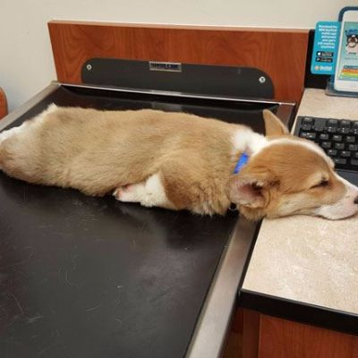

About the Creators
Adam Wittnam
I grew up in a small town in southern Illinois. Moved to south Texas and did 10 years at a Fortune 200 company, more specifically in their Wealth Management Company. After marrying my Active Duty wife, I transitioned to a stay-at-home dad. We've now decided to permanently stay in the Seattle area and for me to change careers and move into the Dev world. Aside from being a semi-pro beardsmith, I can also be found in the woodshop turning wood.
Ed Abrahamsen
I like rocks, kids, and dogs. Not necessarily in that order.
Greg Nordeng
I grew up in the Midwest from Madison Wisconsin, and came out to live in Seattle about two years ago with my wife Olivia seeking new opportunities in life. I have a diverse background and have enjoyed a few different vocations. One of my favorite experiences was being a meteorologist on a navy vessel for several years while stationed in Japan. Toward the end of my Navy career I embarked as an entrepreneur and started working an an e-commerce project with some of my closest friend. I enjoyed a bit of success in this venture and had opportunities to train and work with people all over the world. I am now looking to the future and my life in the coding universe. I know this skill will open up opportunities that otherwise will not be available to me. My goal is to use the skills I learn at Code Fellows to enhance my employ-ability and become a stronger entrepreneur.
Nicole Weese
I'm a bartender trying to make it out of the service industry. I just wrote this bio so I won't get fined.
